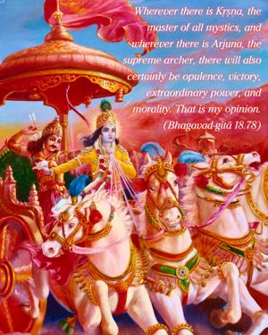
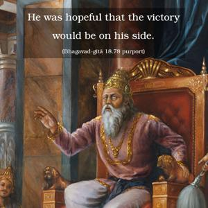
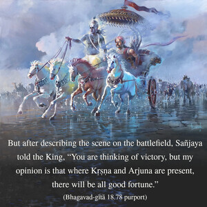

Wherever there is Kṛṣṇa, the master of all mystics, and wherever there is Arjuna, the supreme archer, there will also certainly be opulence, victory, extraordinary power, and morality. That is my opinion.



The Bhagavad-gītā began with an inquiry of Dhṛtarāṣṭra’s. He was hopeful of the victory of his sons, assisted by great warriors like Bhīṣma, Droṇa and Karṇa. He was hopeful that the victory would be on his side. But after describing the scene on the battlefield, Sañjaya told the King, “You are thinking of victory, but my opinion is that where Kṛṣṇa and Arjuna are present, there will be all good fortune.” He directly confirmed that Dhṛtarāṣṭra could not expect victory for his side. Victory was certain for the side of Arjuna because Kṛṣṇa was there. Kṛṣṇa’s acceptance of the post of charioteer for Arjuna was an exhibition of another opulence. Kṛṣṇa is full of all opulences, and renunciation is one of them. There are many instances of such renunciation, for Kṛṣṇa is also the master of renunciation.
The fight was actually between Duryodhana and Yudhiṣṭhira. Arjuna was fighting on behalf of his elder brother, Yudhiṣṭhira. Because Kṛṣṇa and Arjuna were on the side of Yudhiṣṭhira, Yudhiṣṭhira’s victory was certain. The battle was to decide who would rule the world, and Sañjaya predicted that the power would be transferred to Yudhiṣṭhira. It is also predicted here that Yudhiṣṭhira, after gaining victory in this battle, would flourish more and more because not only was he righteous and pious but he was also a strict moralist. He never spoke a lie during his life.
There are many less intelligent persons who take Bhagavad-gītā to be a discussion of topics between two friends on a battlefield. But such a book cannot be scripture. Some may protest that Kṛṣṇa incited Arjuna to fight, which is immoral, but the reality of the situation is clearly stated: Bhagavad-gītā is the supreme instruction in morality. The supreme instruction of morality is stated in the Ninth Chapter, in the thirty-fourth verse: man-manā bhava mad-bhaktaḥ. One must become a devotee of Kṛṣṇa, and the essence of all religion is to surrender unto Kṛṣṇa (sarva-dharmān parityajya mām ekaṁ śaraṇaṁ vraja). The instructions of Bhagavad-gītā constitute the supreme process of religion and of morality. All other processes may be purifying and may lead to this process, but the last instruction of the Gītā is the last word in all morality and religion: surrender unto Kṛṣṇa. This is the verdict of the Eighteenth Chapter.
From Bhagavad-gītā we can understand that to realize oneself by philosophical speculation and by meditation is one process, but to fully surrender unto Kṛṣṇa is the highest perfection. This is the essence of the teachings of Bhagavad-gītā. The path of regulative principles according to the orders of social life and according to the different courses of religion may be a confidential path of knowledge. But although the rituals of religion are confidential, meditation and cultivation of knowledge are still more confidential. And surrender unto Kṛṣṇa in devotional service in full Kṛṣṇa consciousness is the most confidential instruction. That is the essence of the Eighteenth Chapter.
Another feature of Bhagavad-gītā is that the actual truth is the Supreme Personality of Godhead, Kṛṣṇa. The Absolute Truth is realized in three features – impersonal Brahman, localized Paramātmā, and ultimately the Supreme Personality of Godhead, Kṛṣṇa. Perfect knowledge of the Absolute Truth means perfect knowledge of Kṛṣṇa. If one understands Kṛṣṇa, then all the departments of knowledge are part and parcel of that understanding. Kṛṣṇa is transcendental, for He is always situated in His eternal internal potency. The living entities are manifested of His energy and are divided into two classes, eternally conditioned and eternally liberated. Such living entities are innumerable, and they are considered fundamental parts of Kṛṣṇa. Material energy is manifested into twenty-four divisions. The creation is effected by eternal time, and it is created and dissolved by external energy. This manifestation of the cosmic world repeatedly becomes visible and invisible.
In Bhagavad-gītā five principal subject matters have been discussed: the Supreme Personality of Godhead, material nature, the living entities, eternal time and all kinds of activities. All is dependent on the Supreme Personality of Godhead, Kṛṣṇa. All conceptions of the Absolute Truth – impersonal Brahman, localized Paramātmā and any other transcendental conception – exist within the category of understanding the Supreme Personality of Godhead. Although superficially the Supreme Personality of Godhead, the living entity, material nature and time appear to be different, nothing is different from the Supreme. But the Supreme is always different from everything. Lord Caitanya’s philosophy is that of “inconceivable oneness and difference.” This system of philosophy constitutes perfect knowledge of the Absolute Truth.
The living entity in his original position is pure spirit. He is just like an atomic particle of the Supreme Spirit. Thus Lord Kṛṣṇa may be compared to the sun, and the living entities to sunshine. Because the living entities are the marginal energy of Kṛṣṇa, they have a tendency to be in contact either with the material energy or with the spiritual energy. In other words, the living entity is situated between the two energies of the Lord, and because he belongs to the superior energy of the Lord, he has a particle of independence. By proper use of that independence he comes under the direct order of Kṛṣṇa. Thus he attains his normal condition in the pleasure-giving potency.